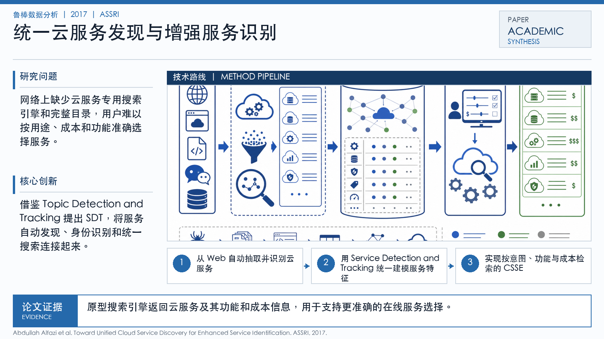

Problem
解决的问题
网络上缺少云服务专用搜索引擎和完整目录，用户难以按用途、成本和功能准确选择服务。
Robust Data Analytics · 2017 · ASSRI
Toward Unified Cloud Service Discovery for Enhanced Service Identification
Problem
网络上缺少云服务专用搜索引擎和完整目录，用户难以按用途、成本和功能准确选择服务。
Value
原型搜索引擎返回云服务及其功能和成本信息，用于支持更准确的在线服务选择。
Paper-grounded Academic Summary
该代表页依据原文摘要、贡献段与方法图注生成。方法视觉由 ImageGen 按论文证据逐篇绘制，中文研究问题、技术路线、创新点与实验结论采用确定性排版，以保证内容与字符准确。
打开原文 PDF
Technical Route
Innovation